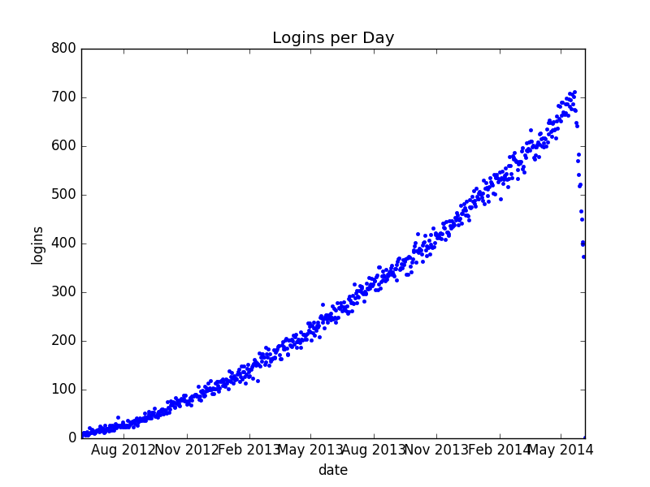
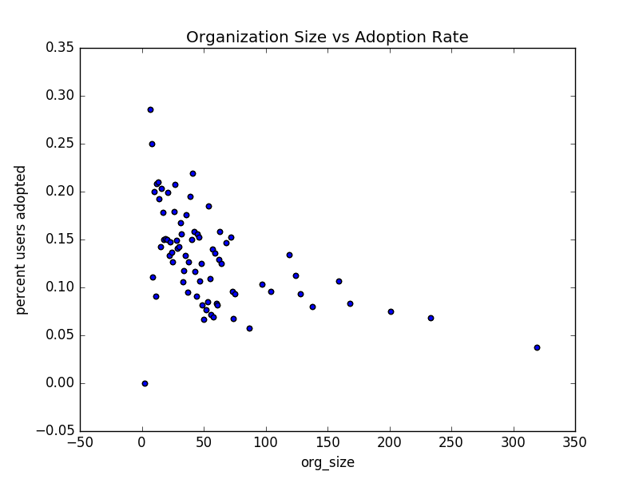
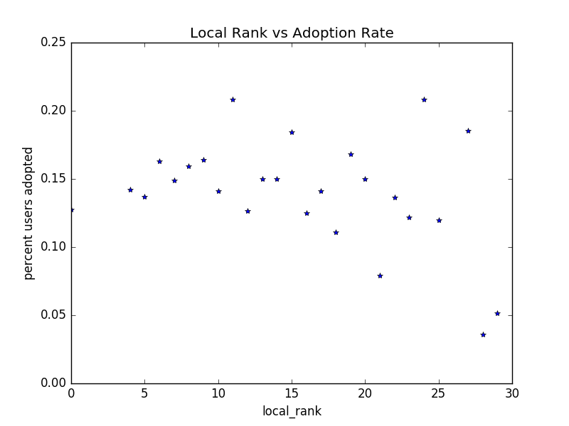
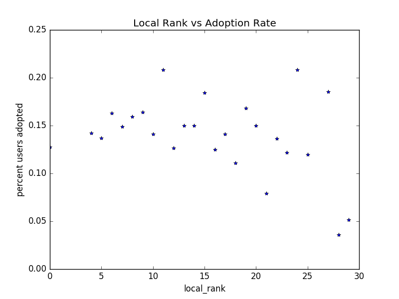

USER ADOPTION¶
INTRODUCTION¶
The purpose of this analysis is to understand what features of a user contribute to user adoption. Before proceeding, two critical points to remember throughout this process are:
- This data is artificial
- We do not have infinite time
We have an engagement table containing login history: userid and timestamp for each user’s login and a users table containing various attributes of users. The following details an inspection and exploration process of the provided data in an effort to determine what factors have the greatest impact on predicting user adoption. From there we will begin to embed the maven user as a feature with the goal of improving prediction as well as better understanding drivers of user adoption. The Maven as described by Malcom Gladwell in The Tipping Point
Data inspection reveals attributes belonging to 2 broad categorizations:
- User
- name
- object_id
- org_id
- last_session_create_time
- opted_in_to_mailing_list
- enabled_for_marketing_drip
- login history (timestamp)
- Path to Company
- creation_source (5 categories)
- GUEST_INVITE
- ORG_INVITE
- PERSONAL_PROJECT
- SIGNUP
- SIGNUP_GOOGLE_AUTH
creation_time
invited_by_user_id
With the exception of login history, this data is organized in a single table. We proceed by calculating whether or not a user has adopted given the criteria (3 logins in a 7 day window) and joining that data to our users table. To do so, we group the login data by user_id, sort by timestamp represented as
pandas.DatetimeIndexand pass a window over the array to check for length of time between a login and the login after the following login, (i, i+2). If that delta in time is less then or equal to 7 days we break out of our iteration and record the user as adopted. An important note throughout this analysis: we have utilized login time and frequency to create the target for our prediction and consequently we must be very careful when including number of logins in any prediction of user adoption, otherwise we will suffer from leakage. We also note that at casual inspection there are no drastic outliers in the users table, however there is potentially an issue with the engagement table data that we will address in the next section. Further analysis of users table with studentized-t residuals can be used to investigate outliers, however beacuse our analysis will mainly pertain to categorical data, outlier analysis will likely not play a signifigant role.
CLEANING¶
We remove name and email from our table. While it’s possible certain types of email addresses can be indicative of browser types and trends do exist within names (see Freakanomics) that analysis is deprioritized here and those fields are removed from our feature space.
Since creation_source is nominal with 5 unique values we dummify the column and store it. It is important to note that the stored data has not dropped a column, so a category can be dropped before modeling to combat collinearity.
One path we can follow here is to investigate adoption rate within organizations. This is logical, however given this approach, we would look to perform this after embedding the maven or other profiles of users (assuming we can find them). To produce the most useful information from the analysis, we need more information about the organizations themselves (size, industry, growth, etc). This would be one of the next few steps to follow our approach begun in the MODELING section below.
We choose to remove time from our predictions for two reasons,
- Time (ours, not the datas). Because we use time in our calculation of adoption rate, we must be extremely careful with building features that incorporate the same data. Also, given the suggested time to spend on this analysis we choose to allocate our time on what we hope will be more accesible and lower hanging but also interesting fruit.
- To properly understand the impact of time on our system we need more information about the product, feature releases, market ecosystem, company history, and outreach.
That all being said, we can still look at time and gain useful information. Plotting logins by day we see an increasing rate of logins per day (a good sign for product health!) until 2014-05-21.
The data after that point demonstrates a system level impact that indicates a catastrophic failure. A likley scenerio here is that the logging of logins began to fail, whether because of a snapshot push or other issues, it begins to spread and then the bottom drops out on 2014-06-05. While world, or product/company catastrophy is possible, given our general knowledge they are likley not the cause.
{kind=link}

The number of accounts created by day likely confirms this theory, and suggests that the increase in rate of account creation at the end of this timeframe exceeded the load the system was designed to handle leading to the failure in capturing logins, without ruling out some of the possibilities enumerated above.
INITIAL ANALYSIS¶
With a clean and numeric representation of the data we are now able to investigate the impact of features on adoption. To do so we will look at extracting feature importance from three modeling techniques: Logistic Regression, Decision Trees, and Random Forests. The magnitude of a (scaled) feature’s coefficient in Logistic Regression represents the impact an increment change of that feature has on final classification, by it’s contribution to the slope defining the hyperplane associated with that feature’s component (with the caveat of holding all other features constant). Logistic Regression’s direct readability of the impact variations in a feature make it a useful tool for it’s interpretability. Decision Trees, while highly prone to overfitting for predicative modeling are useful for their interpretability of feature importance by calculating the gain of information of a split on a feature at a node. Random Forest is an ensemble method utilizing a collection of Decision Trees but uses bootstrapped data and random subselection of features to split on within each tree to decorrelate the trees, which reduces the variance and propensity to overfit of Decision Trees.
With this analysis we use coefficients for Logistic Regression normalized gini impurity for Decision Trees and relative feature importance for Random Forest to evaluate the impact a feature has on predicting user adoption. The results in the following tables represent values from averaging 10 fold cross validation where standard deviations of all values are 1-2 orders of magniutde less then the values presented (excluding 0s). The following models were run with default parameters from sklearn as this is an initial investigation. Since our data is long relative to its width we refrain from utilizing regularization in Logistic Regression. Since our current goal is to understand User Adoption we refrain from tree pruning to better use our time on analysis. For our Random Forest we use 10 trees and did not find signifigant differences in feature importance when increasing the the number of trees in our model, noting that holding all else constant increasing the number of trees in a Random Forest will not lead to overfitting. For prediction moving forward we can look at modifying the number of the splits and/or depth allowed in our forest. For prediction we would also drop Decision Trees and focus on using Logistic Regression and Random Forests, with the potential for a Support Vector Machine Classifier and introducing Boosting to modeling tool suite.
We also take the opportunity here to address why we decided not to dummify org_id. As discussed (and will continue to be discussed) a lack of information about the orgs is a contributing factor, but also would render a Decision Tree substantially less useful and woud increase the computation time for a Random Forest (we recognize that RFs are parallelizable).
| Model | mailing_list | marketing_drip | GUEST_INVITE | ORG_INVITE | PERSONAL | SIGNUP |
|---|---|---|---|---|---|---|
| Tree | 0.023 | 0.038 | 0.025 | 0.144 | 0.69 | 0.08 |
| Forest | 0.068 | 0.074 | 0.132 | 0.1 | 0.562 | 0.065 |
| Logistic | 0.047 | 0.021 | -0.015 | -0.291 | -0.85 | -0.21 |
The take away from the above table is that the methods of invitation are more important then being on the mailing list or a marketing drip. Also please note, that values of our tree based methods represent relative magnitude and cannot imply direction (another perk of Logistic Regression). Since all our features are categorical, coefficients of the Logistic Regression are easy to compare.
MODELING¶
An initial exploration into feature importance gives insight into what is available at the surface of our data. However, to better understand Company users and what drives adoption we look to understand the impact and types of users and organizations. While there is a wide breadth of directions we can proceed from here, we will focus on one organizational attribute -size- to help inform one aspect of users - sign up connectivity- which is a first step in identifying mavens.
Calculating organization size, in the context of this analysis is the number of Company users, which belong to that organzation. We group users by org_id and count them. From there we begin to build a framework to analyze mavens. With the available data we are only able to investigate users who have or exist in the invited_by_user_id field
We hypothesize that inertia of tool usage exists within organizations and look to understand that spread through usage and knowledge levels
- 0th level
When a user is succesful with a tool, the tool is more likely to spread because the user will recommend it to other members of the organization.
- 1st level
A team wide decision to use a common tool for a specific function
- 2nd level
Mavens are users who work to become power users and then act as advocates/ evangelists for the software which is likely to increase the signup rate and adoption rate of those users. The maven will share the power of the tool, yielding a shallower learning curve for new users and an increase in adoption due to learning curve + maven usage.
Combining with tool/software standardization across teams and throughout verticals, mavens provide us a target profile to model with a goal of understanding tool flow throughout organizations.
We will begin building the framework to model mavens by investigating connectivity. In order to integrate connectivity as a feature for modeling we build an undirected graph of each organization. Because a node can only have 1 parent, and we have that recorded in our features we can use an undirected graph to make the computation of calculating connected subcomponents faster. We also threshold a connected component having a local rank greater then 3 for emphasis. This can be further investigated in future work. We maintain the ability to easily switch to a directed graph moving forward if that structure suits our needs better. Now we are able to add the local connected component rank of a user as well as how many children that user has to our design matrix.
With these new features we look at the impact on feature importance and predictive ability in our three models (Note org_size is number of Company accounts belonging to that user’s org_id and continuous variables have been normalized to have a standard deviation of 1 in the design matrix which implies dx for a continuous variable is interpreted differently from a categorical variable in Logistic Regression coefficients:
| Model | mailing_list | marketing_drip | org_size | local_rank | children | GUEST_INV | ORG_INV | PERSONAL | SIGNUP |
|---|---|---|---|---|---|---|---|---|---|
| Tree | 0.084 | 0.054 | 0.4 | 0.234 | 0.133 | 0.03 | 0.024 | 0.013 | 0.027 |
| Forest | 0.036 | 0.029 | 0.55 | 0.23 | 0.104 | 0.012 | 0.013 | 0.013 | 0.013 |
| Logistic | 0.041 | 0.01 | -0.339 | 0.0 | 0.111 | -0.035 | -0.302 | -0.867 | -0.229 |
While the tree based methods find our engineered features rich in information. The Logistic Regression throws away local_rank. Given how we’ve constructed these features in our design matrix there is some redundancy of information. Creating different models based on grouping sign up methods could be a good direction to take our work and garner more insight into features contributing to adoption. We note that our pipeline includes a check of Variance Inflation Factor in constructing our design matrix, and will raise an exception if the magnitude of any feature exceeds a VIF of 3.
Closer inspection reveals an overall downard trend of org_size as we would expect from our Logit coefficient. One interesting phenomenon that we did not expect and likely hinders the success of children and local_rank features is the 0 adoption rate among users with 11 or more children. This is contrary to our maven hypothesis. One potential explanation for these users is they send the reference link and are part of onboarding process but choose another tool within their own team. We do not currently have time within this analysis to include login frequency in a constructive manner, however this attribute would likely help us partition mavens from connectors and improve our model. The next immediate step we can take is to add a feature of whether a user was referred by an existing adopted user. Even though this does not cause leakage we have two paths we can follow.
- Whether the parent was adopted at time of recommendation is likley the best implementation but not a feature we can directly drop into our design matrix without more computation
- Whether the parent ever adopted. However this is not as useful because it create bias in our training data.
{kind=link}
 

{kind=link}
We continue to find mailing_list and marketing_drip to not effectively contribute. At this point if we were to continue to build our model we would try dropping these features and measure the impact on accuracy as well as recall and precision.
We will take this opportunity to discuss class imbalance in our system. With only a 13.8% adoption rate, when moving forward with modeling efforts we will need to account for this. A variety of techniques can be used, depending on resources and application, but given available information SMOAT is likely a good first step to improving the accuracy when we look to predict. In a parallel thread we also bring up that accuracy is likely not the best scoring metric, but to give a more useful scoring metric and direction to take the model we need to better understand what the results are going to drive.
These factors all combine to yield no signifigant change in the accuracy of our model calculated during cross validation.
This is just the initial framework. From here we could incorporate usage frequency at time of recommendation, success rate of invited members, and the velocity of the rank of the graph as potentially interesting and meaningful features in our model.
CONCLUSION¶
With more information about organizations and specific users, user and organizational profiles can help drive product development and pricing (pricing, because we then have a way to evaluate traction within organizations). Moving forward we can look to incorporate more detailed information about types of organizations as well as user application and use history/profiles.
While these next steps all appear to contain great power, they are meaningless if the computation to perform the analysis is intractable. The pulling of data can be moved to a database style context which is optimized for grouping and reorganizing data around an index. The structure of the code utilized lends itself well to partitioning for parallel processing with (key, value) pairs. An advantage of user and organizationl profiling is the creation of intuitive ways to partition the data. Once profiles are complete we can track the change in profiles by comparing subsets windowed by time which again provides natural partitions to our processing. If our data become so verbose that Spark and AWS computation become intractable, we can sample from our data for modeling and evaluation.